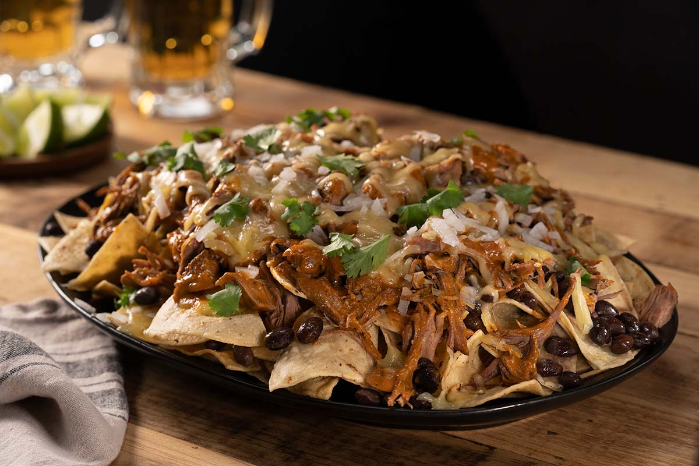

Nacho Mama's Birria

"3 million stars" = my 5 year old niece
Ingredients
| Amount | Food Item |
|---|---|
| 1 bowl | Birria from grandma's house |
| 3 Handfuls | Tortilla Chips |
| 2 Fistfulls | Cheese (make sure it's the good stuff) |
Steps
- Go to grandma's house
- Catch up with grandma and ask how she's doing
- Attempt to leave empty handed
- Ask for the birria when she tells you to take some food home
- Drive safely home
- Throw the bowl of birria in the microwave for 2 minutes
- While birria is heating up, put the tortilla chips on a plate
- When done, pour birria over tortilla chips
- Quickly add the cheese on top. If the cheese doesn't melt right away, microwave for 30 seconds or until cheese is melted.